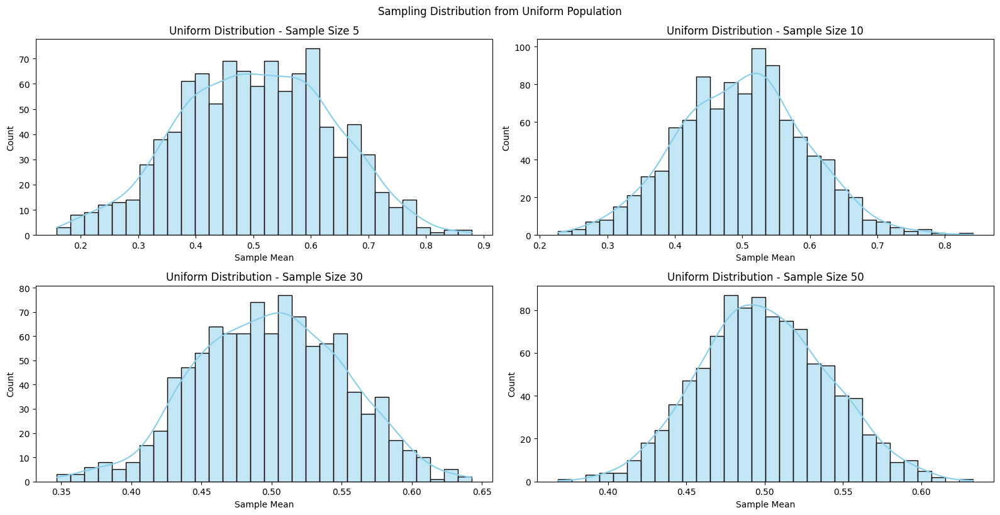

📘 Exploring the Central Limit Theorem (CLT)
🧠 1. Understanding the Central Limit Theorem (CLT)
The Central Limit Theorem states:
Given a population with mean \( \mu \) and variance \( \sigma^2 \), the sampling distribution of the sample mean \( \bar{X} \) will tend to be normal as the sample size \( n \) increases, regardless of the population’s distribution.
Mathematical Expression:
\[
\bar{X} \sim N\left(\mu, \frac{\sigma^2}{n}\right)
\]
🔢 2. Population Distributions
We will use: - Uniform distribution \( U(a, b) \) - Exponential distribution \( \text{Exp}(\lambda) \) - Binomial distribution \( \text{Bin}(n, p) \)
import numpy as np
import seaborn as sns
import matplotlib.pyplot as plt
np.random.seed(42) # for reproducibility
size = 100000 # large population size
uniform_pop = np.random.uniform(0, 1, size)
exponential_pop = np.random.exponential(1, size)
binomial_pop = np.random.binomial(n=10, p=0.5, size=size)

🔁 3. Sampling and Simulating Sample Means
def simulate_sample_means(population, sample_size, num_samples=1000):
means = [np.mean(np.random.choice(population, sample_size, replace=False))
for _ in range(num_samples)]
return means
📊 4. Visualizing the Sampling Distributions
sample_sizes = [5, 10, 30, 50]
distributions = {
"Uniform": uniform_pop,
"Exponential": exponential_pop,
"Binomial": binomial_pop
}
for dist_name, pop in distributions.items():
plt.figure(figsize=(16, 8))
for i, n in enumerate(sample_sizes, 1):
plt.subplot(2, 2, i)
sample_means = simulate_sample_means(pop, n)
sns.histplot(sample_means, kde=True, bins=30, color="skyblue")
plt.title(f"{dist_name} Distribution - Sample Size {n}")
plt.xlabel("Sample Mean")
plt.tight_layout()
plt.suptitle(f"Sampling Distribution from {dist_name} Population", y=1.02)
plt.show()
🔍 5. Discussion Points
- As sample size increases, sample means become more normally distributed.
- Exponential (a skewed distribution) shows slower convergence.
- Uniform and Binomial converge more quickly.
- Spread of sampling distributions decreases with increasing \( n \) due to:
\[
\text{Standard Error} = \frac{\sigma}{\sqrt{n}}
\]
🌍 6. Real-World Applications
- Estimating population parameters when the population is unknown.
- Quality control: Detecting abnormalities in manufacturing.
- Finance: Predicting stock returns using average daily changes.